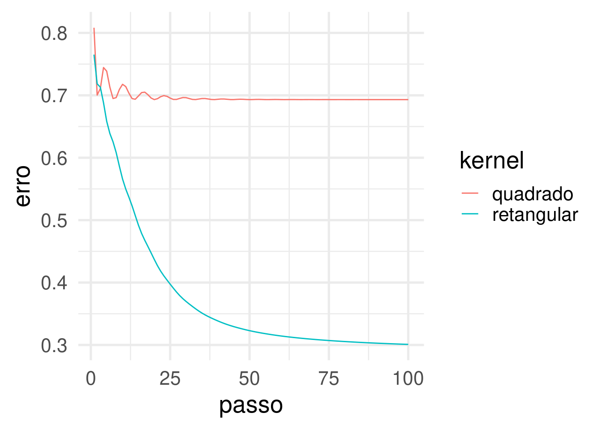
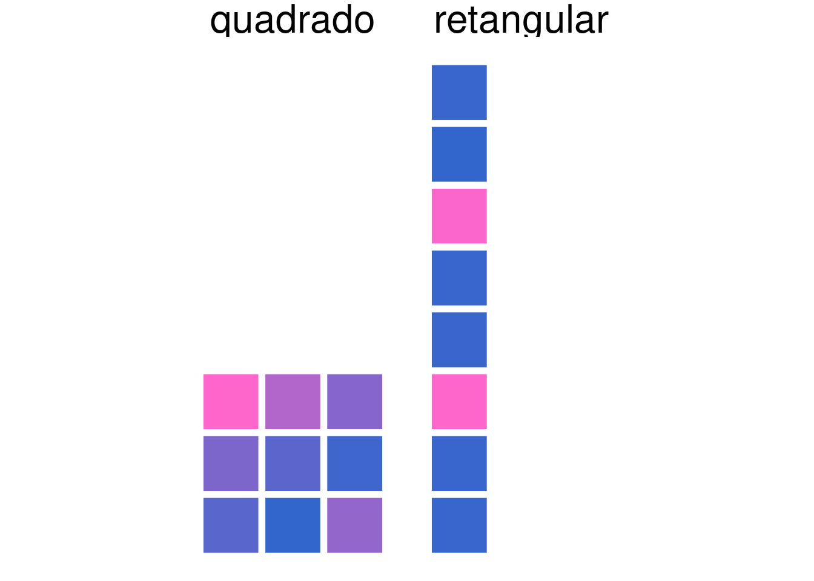

Em modelos de CNN é comum usar kernels quadrados. Mas a depender do problema, kernels com outros formatos podem ajudar como mostrado em (Sun, Ozay, and Okatani 2016)! Um exemplo é o kernel retangular quando se está mexendo com sons e seus respectivos espectrogramas. Para ilustar eu vou criar dois “espectrogramas” bem simples, assim:
library(torch)
library(tidyverse)
library(mestrado)
imagem_passarinho <- torch_ones(8,6) * 0.9
imagem_passarinho[3, 1:3] <- torch_zeros(3)
imagem_sapo <- torch_ones(8,6) * 0.9
imagem_sapo[6, 1:3] <- torch_zeros(3)
# (N, C, F, T) ---> spectrogramas (numero de imagens, canais de cores, faixas de freq, duracao do audio)
x <- torch_stack(c(imagem_passarinho, imagem_sapo))
# coloca a dimensão do "canal": se forem 3 canais é colorido (RGB), se for 1 é preto e branco.
x$unsqueeze_(2)
## torch_tensor
## (1,1,.,.) =
## 0.9000 0.9000 0.9000 0.9000 0.9000 0.9000
## 0.9000 0.9000 0.9000 0.9000 0.9000 0.9000
## 0.0000 0.0000 0.0000 0.9000 0.9000 0.9000
## 0.9000 0.9000 0.9000 0.9000 0.9000 0.9000
## 0.9000 0.9000 0.9000 0.9000 0.9000 0.9000
## 0.9000 0.9000 0.9000 0.9000 0.9000 0.9000
## 0.9000 0.9000 0.9000 0.9000 0.9000 0.9000
## 0.9000 0.9000 0.9000 0.9000 0.9000 0.9000
##
## (2,1,.,.) =
## 0.9000 0.9000 0.9000 0.9000 0.9000 0.9000
## 0.9000 0.9000 0.9000 0.9000 0.9000 0.9000
## 0.9000 0.9000 0.9000 0.9000 0.9000 0.9000
## 0.9000 0.9000 0.9000 0.9000 0.9000 0.9000
## 0.9000 0.9000 0.9000 0.9000 0.9000 0.9000
## 0.0000 0.0000 0.0000 0.9000 0.9000 0.9000
## 0.9000 0.9000 0.9000 0.9000 0.9000 0.9000
## 0.9000 0.9000 0.9000 0.9000 0.9000 0.9000
## [ CPUFloatType{2,1,8,6} ]image_tensors_to_tbl(x) %>%
mutate(label = factor(i, labels = c("passarinho", "sapo"))) %>%
ggpixelgrid(grid_tickness = 2, grid_colour = "white", label = label) +
theme_void(30) +
labs(x = "Tempo (ms)", y = "Frequência (Hz)")Figure 1: Espectrogramas para um sapo e um passarinho. Os animais fazem sons em diferentes faixas de frequência.
Aqui, as cnns são definidas pela função nn_conv2d() do {torch}. O parâmetro que irá variar para compararmos convolução quadrada vs retângular é o kernel_size: para o quadrado, kernel 3x3; para o retangular, kernel 8x1, como mostra o código abaixo.
Repare que a saída resultante de cada convolução é bem diferente! Para o kernel quadrado o tensor resultante é 6x4 enquanto que para o kernel retangular é 1x6.
conv_quadrada <- nn_conv2d(in_channels = 1, kernel_size = c(3,3), out_channels = 1, bias = FALSE)
conv_quadrada(x)
## torch_tensor
## (1,1,.,.) =
## -0.5027 -0.7713 -0.8832 -1.0574
## -0.5600 -0.6553 -0.8317 -1.0574
## -1.0521 -1.3087 -1.2403 -1.0574
## -1.0574 -1.0574 -1.0574 -1.0574
## -1.0574 -1.0574 -1.0574 -1.0574
## -1.0574 -1.0574 -1.0574 -1.0574
##
## (2,1,.,.) =
## -1.0574 -1.0574 -1.0574 -1.0574
## -1.0574 -1.0574 -1.0574 -1.0574
## -1.0574 -1.0574 -1.0574 -1.0574
## -0.5027 -0.7713 -0.8832 -1.0574
## -0.5600 -0.6553 -0.8317 -1.0574
## -1.0521 -1.3087 -1.2403 -1.0574
## [ CPUFloatType{2,1,6,4} ]conv_retangular <- nn_conv2d(in_channels = 1, kernel_size = c(8,1), out_channels = 1, bias = FALSE)
conv_retangular(x)
## torch_tensor
## (1,1,.,.) =
## -0.6746 -0.6746 -0.6746 -0.4139 -0.4139 -0.4139
##
## (2,1,.,.) =
## -0.3025 -0.3025 -0.3025 -0.4139 -0.4139 -0.4139
## [ CPUFloatType{2,1,1,6} ]Comentário: A saída 1x6 pode ser vista como uma média ponderada das frequências em cada um dos 6 instantes de tempo. E essa ponderação é feita pelos 8 pesos do kernel. Intuitivamente, se algum peso der zero, quer dizer que aquela faixa de frequência não é boa para distinguir passarinho de sapo.
# otimizadores
optim_quadrado <- optim_adam(conv_quadrada$parameters, lr = 0.1)
optim_retangulo <- optim_adam(conv_retangular$parameters, lr = 0.1)
# critério de perda
loss <- torch::nnf_binary_cross_entropy
# rótulos encodados: 1 para passarinho, 0 para sapo.
y <- c(1,0)
# loop para a otimização para os dois modelos simultaneamente
erros_da_conv_quadrada <- c()
erros_da_conv_retangular <- c()
for(i in 1:100) {
# zera grads
optim_quadrado$zero_grad()
optim_retangulo$zero_grad()
# valores preditos
pred_quadrado <- conv_quadrada(x) %>% nnf_sigmoid() %>% torch_mean(dim = c(2,3,4))
pred_retangulo <- conv_retangular(x) %>% nnf_sigmoid() %>% torch_mean(dim = c(2,3,4))
# erros
erro_conv_quadrada <- loss(pred_quadrado, y)
erro_conv_retangular <- loss(pred_retangulo, y)
erros_da_conv_quadrada <- c(erros_da_conv_quadrada, as.numeric(erro_conv_quadrada))
erros_da_conv_retangular <- c(erros_da_conv_retangular, as.numeric(erro_conv_retangular))
# propagação dos erros (gradientes de cada param)
erro_conv_quadrada$backward()
erro_conv_retangular$backward()
# atualização dos pesos em direção oposta ao gradiente
optim_quadrado$step()
optim_retangulo$step()
}
# quadrado
pesos_kernel_quadrado <- conv_quadrada$parameters$weight$squeeze(1)$squeeze(1)
pesos_kernel_quadrado
## torch_tensor
## 0.3579 0.2233 -0.1470
## -0.1289 -0.0706 0.0239
## -0.0689 0.0025 -0.1698
## [ CPUFloatType{3,3} ]
# retangular
pesos_kernel_retangular <- conv_retangular$parameters$weight$squeeze(1)$squeeze(1)
pesos_kernel_retangular
## torch_tensor
## -0.2458
## 0.1261
## -4.3165
## -0.2081
## 0.2781
## 4.3999
## -0.2322
## 0.2100
## [ CPUFloatType{8,1} ]É possível observar que:

As predições da convolução quadrada deu tudo 50%, ou seja, não foi possível separar os dois pontos! Ou chutamos tudo sapo, ou chutamos tudo passarinho. Sempre iremos cometer algum erro.
# quadrado
conv_quadrada(x) %>% nnf_sigmoid() %>% torch_mean(dim = c(2,3,4))
## torch_tensor
## 0.5005
## 0.5005
## [ CPUFloatType{2} ]
# retangular
conv_retangular(x) %>% nnf_sigmoid() %>% torch_mean(dim = c(2,3,4))
## torch_tensor
## 0.7413
## 0.2608
## [ CPUFloatType{2} ]kernel_size para testar novos kernels!Em próximas postagens vou conduzir essa comparação em outros bancos de dados mais interessantes: um de brincadeira (Guess The Correlation) e um real (Sons de Pássaros).
Sun, Zhun, Mete Ozay, and Takayuki Okatani. 2016. “Design of Kernels in Convolutional Neural Networks for Image Classification.” In, 9911:51–66. https://doi.org/10.1007/978-3-319-46478-7_4.